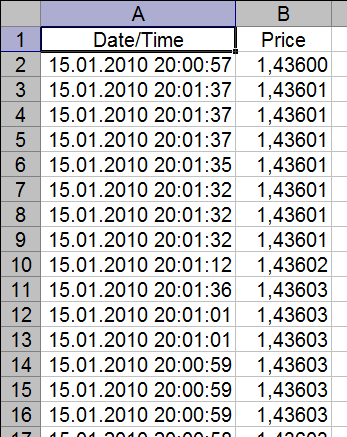
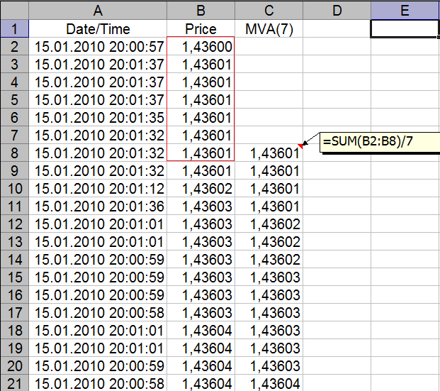
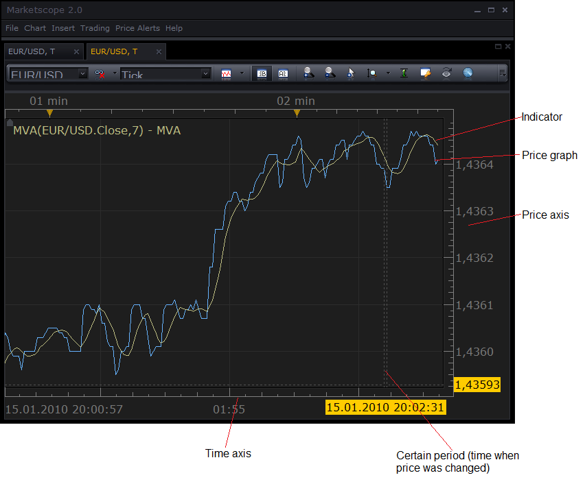
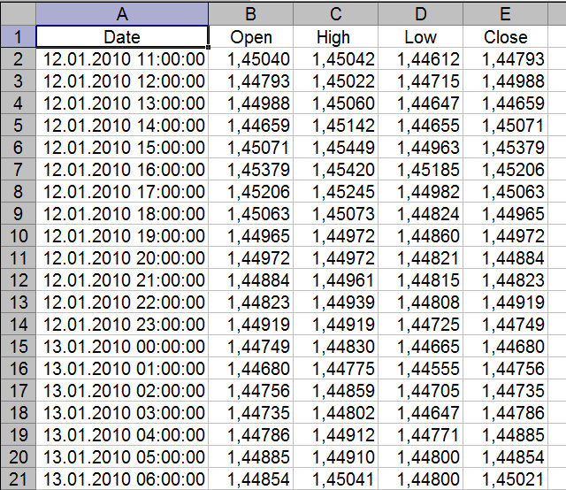
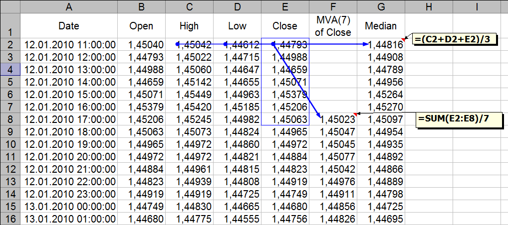
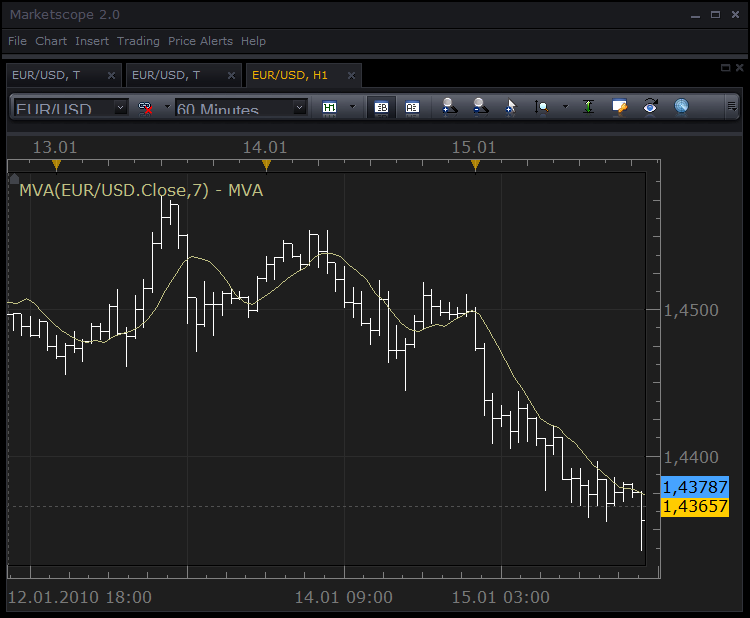
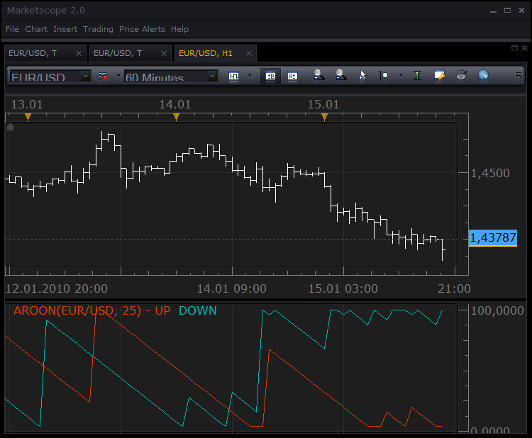
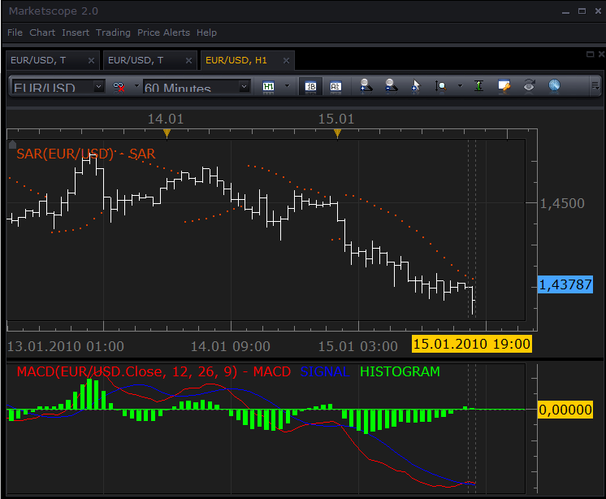
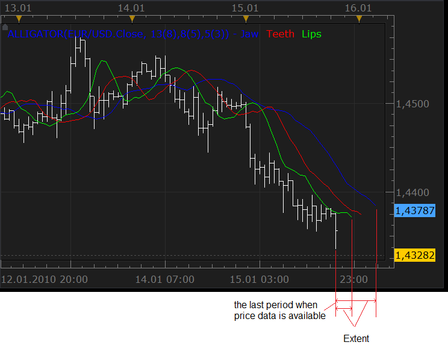

The section provides definitions for specific terms that are used in the SDK.
What is technical analysis?
Technical analysis is an analysis of past market data, primarily price and volume for detecting trends and forecasting the future direction of the prices. Technical analysis supposes that historical prices discount and reflect all relevant information and factors which could affect the price in future. The main tool of the technical analysis is an indicator, a mathematical manipulation on the historical data (prices and volume) in order to present it more convincingly to make trend detection and price forecasting easier.
Tick, Price History and Simplest Indicator, Indicator Source and Output, Stream
Price on the market changes almost always when a new deal appears. Each particular change of the price is called tick. A price history is a sequence of ticks in the order of new price appearance:

One of the simplest indicator is moving average, which smoothes out short-term fluctuations and highlights long-term trends or cycles. Moving average is an average price for the specified number of last periods. The number of periods can vary. Larger number of periods not only increases the level of the fluctuations filtering, but also increases the inertia of the indicator. In other words, it increases the minimal length of the trend which can be detected. So, the analysts must choose the number of periods to satisfy their analysis' goals. Such varying part of the indicator logic is called parameter. The parameters do not change the indicator rules and logic, but let the analysts "tune" indicator to their needs. Below is an example of the calculation of the seven-period moving average indicator on EUR/USD tick data.

The data which is used to calculate the indicator is called the indicator source. The data produced by the indicator is called the indicator output. As with the price, the indicator result is also just a sequence of numbers which are related to the particular moment in time. Moreover, the output calculated for the particular price corresponds to the same time period as the source price. In general, as a mathematician, there is no difference between tick history and indicator output. So, if you desire, the moving average can be calculated again, using the previous moving average as a source. In short, we can consider the indicator output as tick history.
The sequence of numbers (both the source price and the indicator output) related to the time scale are called streams.In our example, the price data is a tick stream and moving average result is the output stream. For almost all indicators, price data are referred by their order rather than the particular time as the latter is not important. For example: the first price, the second price, the Nth price, the last price. This "index of the price" is called a number of the period.
Please note that the moving average output is not calculated at all for first six periods of the price history. In that case, you must sum the current period and six previous periods to calculate the current output. You are not able to calculate for the periods from first to sixth since there is not enough data to do it. Almost all indicators need some "reserve" of the data before they can be calculated. The first moment of time when indicator output is available is usually later than the first moment when the source is available.
In the charting applications such tick data are usually drawn as lines:

Bars, Required Source
Often tick data is too detailed or voluminous to be analyzed. In that case the price data is presented as OHLC bars. An OHLC bar is open, high, low and close price which were reached during a particular period of time in past. The analyst can use different length of periods to group the data, but the most prevailing are the following periods: 1 minute, 5 minutes, 15 minutes, 1 hour, 4 hours, 1 day, 1 week. Below is an example of the 1-hour bars for the EUR/USD.

As one can observe, bar stream is very similar to the tick stream, but has four prices instead of one. Also, moment of time implies the time when this 1-hour period was started. Each price (open, high, low or close) can be considered as a tick stream. For example, you can not calculate moving average of the whole bar, but you can calculate moving average of open, high, low or close values. However, there are indicators which requires the whole bar to be calculated, for example median which is an average of high, low and close prices. So, indicator logic can require the source to be either tick (just one price for each time period) or the whole bar (open, close, high and low prices for each time period) price data.

The charting application with 1-hour bar chart and 7-period moving average applied on close prices:

Oscillators
Some indicators, such as moving average, produces output which is comparable with the source, so it can be drawn together with the prices (or other source), at the same chart. But few others, such as Aroon or moving average convergence/divergence (MACD),produces output in their own scale. For instance, Aroon always produces output in range 0…100, so its result can not be drawn on the same chart. Such indicators are called oscillators. The charting application usually draws oscillators on their own price axis below the main chart. See an example of the Aroon oscillator below:

Line Styles
The indicator output can also be displayed on the chart not only as lines, but as histogram bars or as set of dots. However, histogram bar style is useful for oscillators only, because bar is drawn from zero to the specified level,so bar drawing on the price chart could break it. The charting application with 1-hour bar chart and SAR (dots) and MACD(lines and histogram bars) applied:

Multiple Output, Extent
Few indicators produce more than one output. For example, Alligator indicator produces three lines: Jaws, Teeth and Lips. So, indicator can have multiple outputs. Also, the indicator output could be as longer as well as shorter than the source. This difference in the length between the source and the output, expressed in number of periods is called extent. In case, the indicator output has the same length, the extent is zero. If the output is longer by 5 periods, the extent is 5 and when the output is shorter than 5 periods, the extent is -5.
